새 공개 실사에서 원 R0를 실제 실행했다. 6장은 다른 물체/대상 부재 오검출, 2장은 여러 팔레트의 점이 섞여 개체 대응 불명확, 2장은 팔레트 개체가 지지되지만 native별 위치 품질과 역할 가림을 별도 검토해야 한다. 원80 query와104 GT 참조를 모두 보존했으며, 오검출을 외부 가림 E로 학습하면 안 된다는 직접 근거를 얻었다.
실제 원 R0: 10프레임 · 모든16후보 · 원80점 · 연속좌표 유효78 / 최근접 픽셀 유효77. 별도 제공 GT native 참조104개와 centroid13개. 학습·PnP·현재 평가셋 접근0.
현재 평가 성능 개선을 입증한 단계는 아니다. 이전 모델 비교는 V149에 그대로 남아 있다. 이10장의 비율을 배포 정확도로 해석하지 않는다.
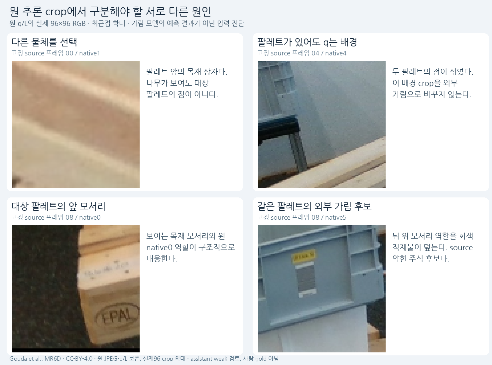
잘못 선택한 목재 상자, 다른 팔레트와 섞인 점, 보이는 대상 모서리, 외부 적재물 가림 후보를 나눠 본다. 원96 crop은 색·픽셀 변경 없이 최근접 확대했다.
| 순서 | source | 개체 대응 | 근거 |
|---|---|---|---|
| 00 | val/000005:15 | 목재 상자 오선택 | 전경 목재 상자/문짝을 선택했다. 뒤의 세워진 팔레트와 다른 물체다. |
| 01 | val/000005:20 | 목재 상자 오선택 | 전경 목재 상자를 선택했다. 원 upright 팔레트 후보로 대체하지 않았다. |
| 02 | val/000000:67 | 팔레트 화면 밖 / 오검출 | 제공 팔레트 두 개 모두 화면 밖이다. 원 선택은 바닥·벽 경계의 오검출이다. |
| 03 | val/000000:5 | 여러 팔레트 혼합 의심 | q8이 위 팔레트와 아래 전면·배경에 걸친다. 단일 팔레트 대응을 확정하지 않았다. |
| 04 | val/000000:9 | 여러 팔레트 혼합 의심 | 전면 점들은 아래 팔레트, 후방 점들은 위 팔레트·배경으로 흩어진다. 단일 GT로 붙이지 않는다. |
| 05 | val/000002:0 | 목재 화물 오선택 | 팔레트 위 목재 화물의 얇은 윗부분을 선택했다. 팔레트 자체가 아니다. |
| 06 | val/000002:9 | 팔레트 개체 지지 / 역할별 검토 | 선택 box와 앞 모서리는 단일 팔레트에 대응한다. 후방 crop의 적재물과 위치 오차·self를 분리한다. |
| 07 | val/000002:41 | 목재 화물 오선택 | 팔레트 위 목재 상자를 선택했다. 실제 팔레트는 영상 아래쪽에 있다. |
| 08 | val/000006:7 | 팔레트 개체 지지 / 역할별 검토 | 선택 box와 앞 네 모서리는 팔레트에 대응한다. 후방은 적재물·self·좌표 오차를 분리한다. |
| 09 | val/000006:22 | 바닥 작은 물체 오선택 | 팔레트 뒤 바닥의 작은 물체를 선택했다. 원 팔레트로 재선택하지 않았다. |
오검출/개체 혼합/위치 오류는 query 품질이고, 실제 그 역할이 보이거나 외부 물체에 가리는 상태는 역할 visibility다. 전경 목재 상자 crop을 E로 바꾸면 “다른 물체”와 “외부 가림”을 혼동해 배운다. 명확한 부분 역할은 다른 역할이 불확실해도 별도 약한 감독 후보로 남긴다.
제공104 역할에 대한 source assistant 제안: D39 / E10 / S2 / 화면밖35 / U18. 이는 원80 query에 곧바로 붙일 정답이 아니다. 원80행을 모두 보존한 별도 약한 주석에는 대상 개체 불일치48 / 개체 지지16 / 불명확16을 기록했다. 그중 구조 대응이 지지되는 역할 D8 / E2만 visibility 감독 후보로 남겼다. 개체 label64개 중 최근접 입력 유효는63개이며, 정확한 점 좌표 품질 label은0개다.
사람 gold·정확한3px 좌표·학습 준비 완료를 주장하지 않는다. 외부 가림 / 자기 가림 / 화면 밖 / 위치 오류를 분리하고 정사각형 목표 범위도 계속 유지한다.
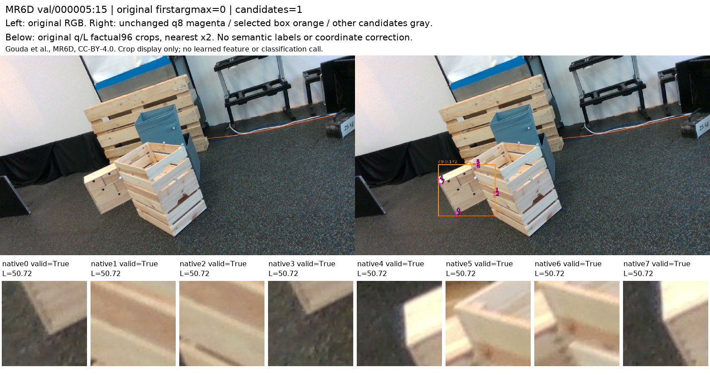
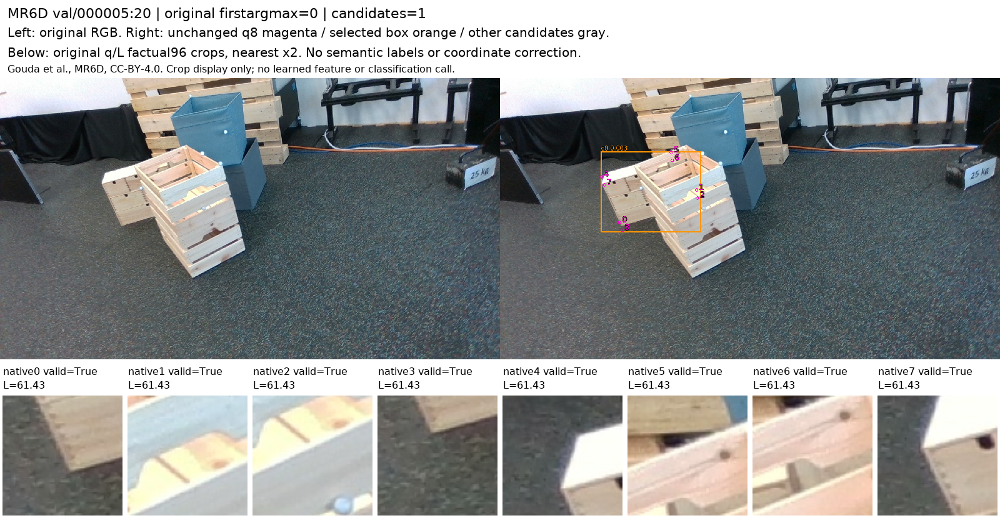
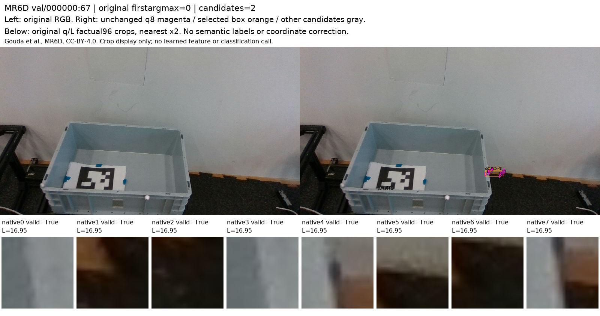
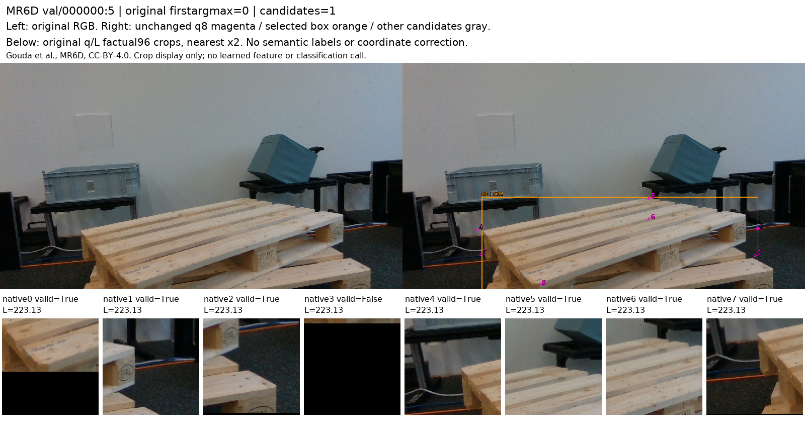
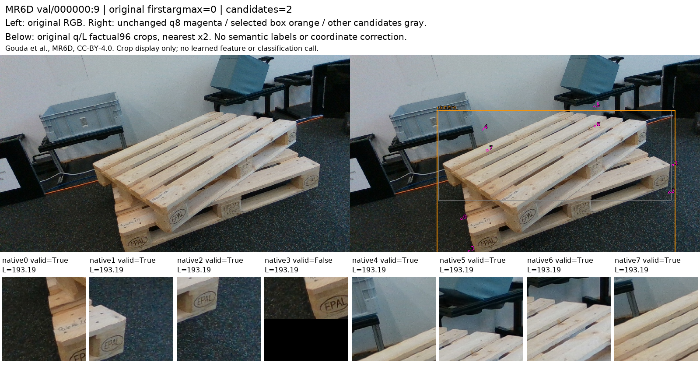
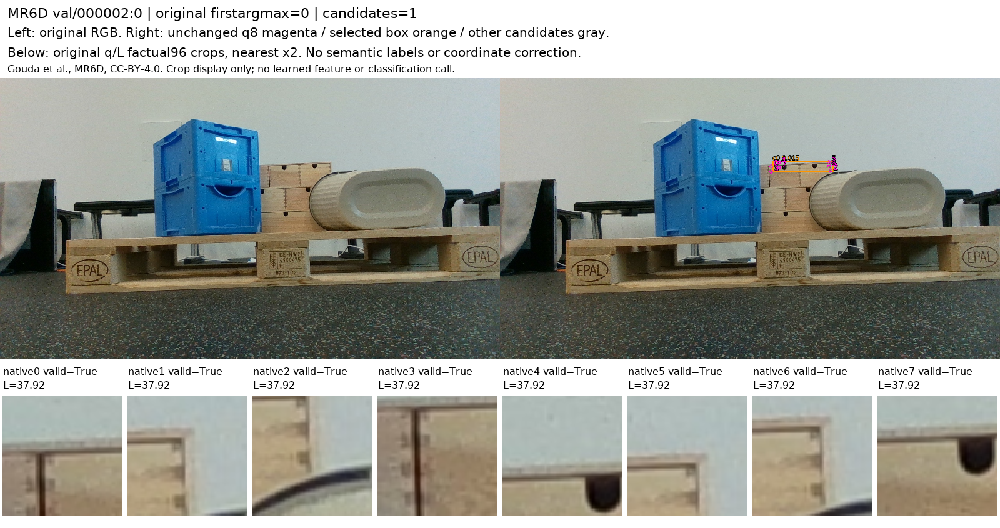
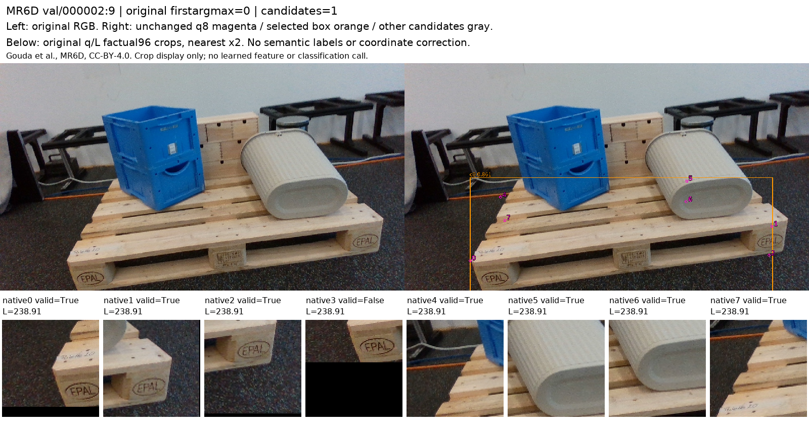
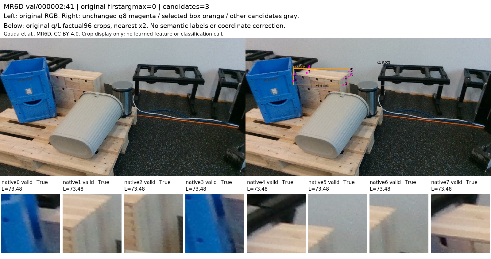
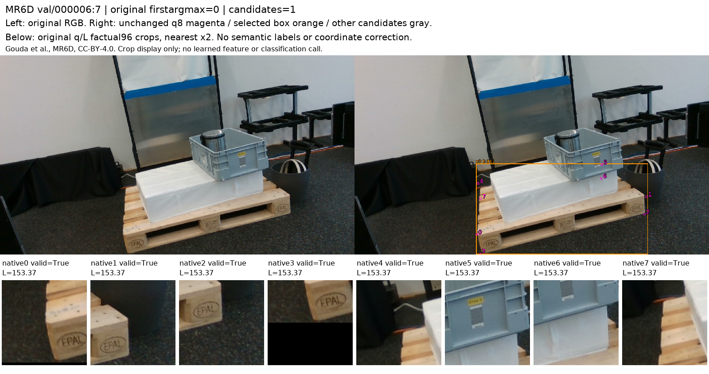
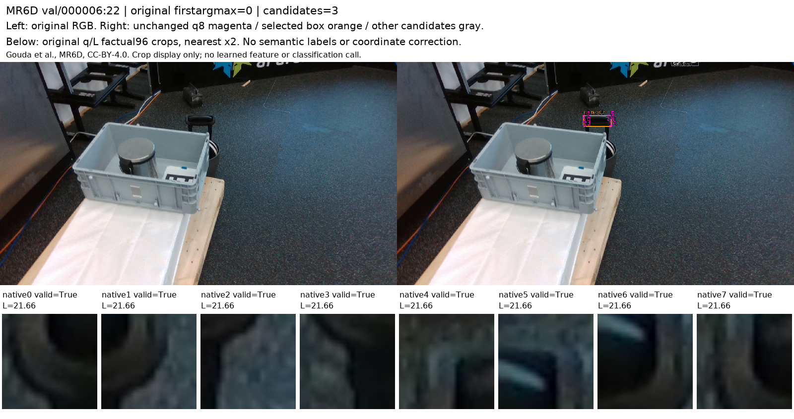
Gouda et al., MR6D, CC-BY-4.0. 공개 source 개발용 재사용이며 공식 MR6D blind benchmark 결과가 아니다.